Electricidad industrial y comercial en Caracas
Estudios de calidad de energía y termografía, tableros, plantas de emergencia, baterías y mantenimiento de UPS, adecuación de oficinas y locales, edificios y condominios e instalaciones industriales en la Gran Caracas, con visita técnica, presupuesto por escrito y garantía de 30 días a 1 año según el servicio.

Situaciones en las que su empresa necesita un contratista eléctrico
Una falla eléctrica en una empresa cuesta producción, ventas o seguridad. Estas son las más frecuentes.
Servicios eléctricos para empresas, edificios e industrias
Cada servicio tiene su página con el detalle de lo que incluye y cómo trabajamos.
Mantenimiento eléctrico industrial
Inspección, mediciones e informe para prevenir paradas, con planes periódicos por contrato.
Análisis de calidad de energía
Registro de armónicos, caídas de tensión, factor de potencia, desbalance y flicker en su planta.
Termografía infrarroja
Detecta conexiones y equipos que se calientan, sin detener la operación, antes de que fallen.
Estudios de carga
Levantamiento y medición de cargas para saber qué capacidad tiene y qué puede añadir.
Tableros y distribución
Montaje, ampliación y reemplazo de tableros de distribución, con circuitos rotulados y probados.
Diseño de tableros eléctricos
Diagrama unifilar, protecciones, planos y lista de materiales para tableros nuevos o ampliados.
Corrección del factor de potencia
Bancos de condensadores dimensionados con datos reales para reducir penalizaciones y pérdidas.
Plantas eléctricas y transferencia (ATS)
Plantas de emergencia con transferencia automática y UPS para mantener la operación.
Instalaciones industriales
Distribución de fuerza, motores y control para galpones, fábricas y talleres.
Oficinas y locales comerciales
Instalaciones eléctricas para oficinas, tiendas y restaurantes, ejecutadas sin detener su operación.
Edificios y condominios
Áreas comunes, tableros, bombas, iluminación y respaldo de energía para juntas de condominio.
Iluminación LED industrial y comercial
Luminarias LED para galpones, oficinas, locales y áreas comunes, con menor consumo.
Puesta a tierra y protección
Pozos y mallas de tierra, medición de resistencia y protección contra sobretensiones.
Emergencias eléctricas 24/7
Atención las 24 horas de cortocircuitos, fallas de tablero y falta de fase en empresas y edificios.
Servicio residencial
Atención puntual para casas y apartamentos: fallas, circuitos y reformas.
Baterías y reparación de UPS en Caracas
Reparamos UPS de todas las capacidades y marcas, con ingenieros y técnicos de más de 20 años de experiencia. Un UPS solo protege mientras sus baterías están en buen estado. Las baterías selladas suelen durar de tres a cinco años; revisarlas a tiempo evita descubrir la falla en pleno corte.
Reparación de UPS
Diagnóstico y reparación de UPS de todas las capacidades y marcas.
Ver →Cambio de baterías para UPS
Baterías nuevas instaladas y probadas, con retiro de las usadas.
Ver →Mantenimiento de UPS
Revisión periódica, mediciones y pruebas para detectar fallas antes del corte.
Ver →Instalación de UPS y bancos de baterías
Dimensionamiento, montaje y puesta en servicio de UPS y bancos de baterías.
Ver →Señales de batería de UPS dañada
Cómo reconocer una batería agotada y qué hacer antes de que falle.
Ver →Atendemos toda la Gran Caracas
Cinco municipios, cada uno con sus propias necesidades. Elija el suyo para ver qué trabajos son más frecuentes.
Libertador
Sabana Grande, El Paraíso, San Bernardino, Los Chaguaramos…
Ver zona →Municipio Chacao (Miranda)Chacao
Altamira, Los Palos Grandes, La Castellana, El Rosal…
Ver zona →Municipio Baruta (Miranda)Baruta
Las Mercedes, Prados del Este, La Trinidad, Colinas de Bello Monte…
Ver zona →Municipio El Hatillo (Miranda)El Hatillo
Pueblo de El Hatillo, La Lagunita, Oripoto, Alto Hatillo…
Ver zona →Municipio Sucre (Miranda)Sucre
Petare, Los Dos Caminos, Los Cortijos de Lourdes, Boleíta…
Ver zona →Comercio e industria, con la misma disciplina técnica
🏢 Oficinas, locales y edificios
- Adecuación eléctrica de oficinas, tiendas, restaurantes y consultorios
- Mantenimiento de tableros y áreas comunes de condominios
- Respaldo de energía para bombas, ascensores y equipos críticos
- Iluminación LED para reducir el consumo
- Trabajos fuera de horario para no detener su operación
🏭 Industria y galpones
- Tableros de distribución y centros de control de motores
- Alimentación trifásica según la tensión de la planta
- Variadores de frecuencia, arrancadores y protecciones
- Bandejas portacables, canalización y puesta a tierra
- Mantenimiento preventivo con inspección y mediciones
También atendemos casos residenciales puntuales: fallas, circuitos y reformas en casas y apartamentos. Ver servicio residencial →
De la primera visita a la entrega, sin sorpresas
- 1
Visita técnica
Revisamos la instalación, la carga y las restricciones de operación de su empresa.
- 2
Presupuesto y garantía por escrito
Alcance, materiales, plazos y garantía definidos antes de comenzar cualquier trabajo.
- 3
Ejecución sin detener su operación
Trabajo por fases y en los horarios acordados, con el menor impacto posible.
- 4
Pruebas y entrega
Mediciones, verificación de protecciones y rotulado de tableros antes de dejar todo operativo.
- 5
Soporte posterior
Mantenimiento preventivo y atención ante cualquier falla, incluso fuera de horario.
Guías para gerentes, administradores y juntas de condominio
Información práctica para detectar problemas a tiempo y tomar mejores decisiones.
Señales de que su instalación necesita revisión
Breakers que saltan, olor a quemado, tomas calientes: qué significan y cuándo llamar.
Leer →Guía · 4 min¿Cuándo cambiar el tablero eléctrico?
Cómo saber si el tablero ya no es suficiente o dejó de ser seguro.
Leer →Guía · 3 minQué incluye una visita técnica eléctrica
Qué se revisa, cómo prepararla y qué recibirá al final.
Leer →Guía · 5 minSeguridad eléctrica en casa
Hábitos y protecciones básicas para prevenir descargas e incendios en el hogar.
Leer →Guía · 5 minMantenimiento preventivo para empresas
Qué revisar, con qué frecuencia y por qué es más barato que reparar una falla.
Leer →Guía · 4 minCómo pedir un presupuesto eléctrico
Qué información reunir y cómo comparar presupuestos para evitar sorpresas.
Leer →Lo que recibe al terminar el trabajo
- Garantía por escritoDe 30 días a 1 año, según el servicio y los materiales instalados.
- Instalación probadaVerificamos tensión, protecciones y funcionamiento antes de entregar.
- Circuitos rotuladosCada breaker queda identificado con el área o equipo que alimenta.
- Explicación claraLe decimos qué encontramos, qué hicimos y qué conviene revisar a futuro.
Resolvemos sus dudas antes de empezar
¿En qué zonas de Caracas trabajan?
En toda la Gran Caracas: Libertador, Chacao, Baruta, El Hatillo y Sucre. Escríbanos por WhatsApp con la ubicación de su empresa y confirmamos disponibilidad.
¿Atienden emergencias eléctricas en empresas?
Sí, las 24 horas: cortocircuitos, breakers que no sostienen, olor a quemado, falta de fase o fallas en el tablero.
¿Qué garantía ofrecen?
Entregamos garantía por escrito que va de 30 días a 1 año, según el tipo de servicio y los materiales instalados. El plazo exacto se indica en el presupuesto.
¿Trabajan con condominios y administradoras?
Sí. Hacemos mantenimiento programado de áreas comunes, tableros, bombas y respaldo de energía, con informes y presupuestos detallados para la junta.
¿Instalan plantas eléctricas, transferencia automática y UPS?
Sí. Dimensionamos e instalamos plantas de emergencia con tablero de transferencia automática (ATS), UPS y bancos de baterías para empresas, comercios e industrias.
¿Pueden trabajar sin detener nuestra operación?
Sí. Planificamos por fases y en horarios acordados, incluso fuera del horario comercial, para minimizar el impacto.
¿Cómo se inicia una cotización?
Escríbanos por WhatsApp o use el formulario de contacto con el tipo de inmueble, su zona y una breve descripción. Coordinamos una visita técnica y entregamos un presupuesto por escrito.
Solicite una visita técnica y reciba un presupuesto por escrito.
Cuéntenos qué necesita su empresa, edificio o industria y su zona dentro de la Gran Caracas. Visitamos el sitio y le entregamos alcance, plazo, garantía y presupuesto por escrito antes de empezar.